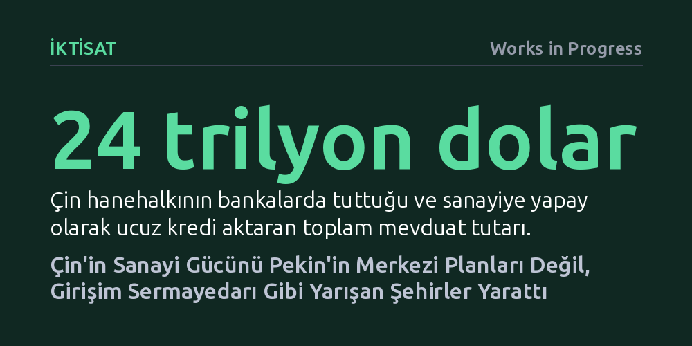

IKTISAT · Works in Progress · 2026-10-13
Çin’in küresel sanayi hakimiyeti Pekin’in merkezi emirleriyle değil, terfileri ekonomik büyümeye bağlı olan ve birer girişim sermayedarı gibi davranan yerel yönetimlerin kıyasıya rekabetiyle inşa edildi. Şehirler ucuz arsa ve sermaye teşvikleriyle dev kümelenmeler kurarak küresel üretimi ele geçirdi.
Çin modelini tek merkezden planlanan monolitik bir devlet kapitalizmi sanan yaygın yanılgıyı yıkarak, asıl itici gücün şehirler arasındaki piyasa benzeri acımasız bürokratik rekabet olduğunu gösterir.

Batı dünyasında Çin'in teknoloji ve imalat sanayisindeki hızlı yükselişi genellikle Pekin'deki merkezi planlamacıların mutlak kontrolüne veya sadece ucuz iş gücüne bağlanır. Oysa Huawei, BYD, DJI veya CATL gibi küresel pazarları sarsan dev şirketlerin hiçbirini Pekin kurmadı. Çin'in sanayi dönüşümünün asıl mimarları, yatırım ve prestij için birbirleriyle kıyasıya yarışan binlerce yerel yönetimdir.
Çin'deki belediye başkanları ve yerel yöneticiler klasik kamu idarecilerinden çok, birer risk sermayesi (venture capital) fonu ortağı gibi çalışır. Başarılı yatırımlar yapıp yönettikleri bölgenin ekonomik portföyünü büyüttüklerinde hızla terfi eder, başarısız olduklarında ise kariyerleri sona erer. Şehirler; doğrudan şirketlere sermaye koyan, fabrikalara altyapı ve arsa sağlayan, ardından bu yatırımların yarattığı tedarik zincirlerinden vergi ve gayrimenkul rantı toplayan dikey entegre holdingler gibi örgütlenmiştir.
Bu modelin en somut örneği Hefei kentidir. 2008 yılında hiçbir ekran sanayisi bulunmayan bu mütevazı şehir, o dönem zor durumdaki panel üreticisi BOE Technology'ye belediye gelirlerinin neredeyse onda birini yatırarak ortak oldu. Bugün BOE dünyanın en büyük ekran üreticisine dönüşürken, Hefei bu yatırımdan elde ettiği getiriyi elektrikli araç üreticisi NIO ve çip üreticisi CXMT gibi yeni girişimlere yatırarak milyarlarca dolarlık kamu geliri ve devasa bir yüksek teknoloji ekosistemi yarattı.
Yerel yöneticilerin birer yatırımcı gibi risk almasını sağlayan mekanizma, Çin Komünist Partisi içindeki acımasız terfi sistemidir. Her memur ve bürokrat, üstleri tarafından tutulan gizli bir sicil dosyasında puanlanır. Bu değerlendirmede en yüksek ağırlık; kişi başına düşen gelir artışı, yerel bütçe gelirleri, sanayi yatırımları ve ihracat gibi doğrudan ekonomik büyüme göstergelerine verilir. 2000'li yıllarda önceki döneme kıyasla büyümeyi sadece 3,3 yüzde puan artıran yetkililerin terfi şansı neredeyse yarı yarıya artıyordu.
Sistemin yarattığı baskıyı katlayan bir diğer kural ise katı yaş tavanlarıdır. Bir bürokrat kırklı yaşlarının ortasına kadar vilayet düzeyine, ellili yaşlarında ise eyalet veya bakanlık kademesine tırmanamazsa kariyeri ömür boyu kilitlenir. Kaçırılan her yaş penceresi sistemden tasfiye anlamına geldiğinden, yerel yöneticiler bürokratik atalete kapılmak yerine agresif ve hızlı sonuç veren sanayi projelerine sarılmak zorundadır.
Bugün Çin'in iki numaralı lideri olan Başbakan Li Qiang'ın kariyeri bu çarkın en açık kanıtıdır. 2000'lerin başında Wenzhou kentinde özel sektörün önünü açarak iki yıl üst üste yüzde 14'ün üzerinde büyüme sağlayan Li, Zhejiang eyalet yöneticiliğinde binlerce idari izin şartını kaldırarak piyasayı serbestleştirdi. Şanghay'ın başındayken Tesla'nın Gigafactory tesisini Elon Musk'ın bile beklemediği bir hızla, bir yıldan kısa sürede üretime geçirerek kenti küresel bir elektrikli araç üssü yaptı ve nihayetinde Politbüro'nun zirvesine çıktı.
Çin şehirlerinin küresel şirketleri çekmek için kullandığı asıl güç toprak mülkiyetidir. Şehir yönetimleri geniş arazileri sanayiye ayırır ve dev şirketlere yok pahasına tahsis eder. Sanayiye verilen bu ucuz arsa desteğinin maliyeti ise, fabrikanın etrafına doluşan tedarikçiler, mühendisler ve işçiler sayesinde değerlenen konut ve ticari arsaların müteahhitlere yüksek bedellerle satılmasıyla finanse edilir. Küçük bir kasaba olan Kunshan'ın Tayvanlı üreticilere sunduğu inanılmaz kolaylıklarla dünyanın dizüstü bilgisayar üretim merkezine dönüşmesi veya Ningde'nin CATL etrafında küresel bir batarya kümesi yaratması bu mantıkla işledi.
Bu devasa büyüme makinesini besleyen finansal kaynak ise Pekin'in makroekonomik kısıtlamalarıyla üretilir. Vatandaşların yurt dışına yılda en fazla 50 bin dolar çıkarabilmesi ve yerel alternatif yatırım araçlarının sınırlı tutulması, halkı tasarruflarını bankalara yatırmaya zorlar. 2025 itibarıyla Çin hanehalkının bankalarda tuttuğu mevduat 24 trilyon dolara, yani ülke GSYH'sinin yüzde 122'sine ulaşmıştır.
Merkezi yönetimin mevduat faizlerine tavan koyması sayesinde bankalar, sanayi şirketlerine yapay olarak çok ucuz kredi sağlar. Enflasyonun altında kalan reel mevduat faizleri, yüz milyonlarca tasarruf sahibinden şirketlere aktarılan devasa bir örtülü kaynak transferidir. Ağır borç yüklerine rağmen Çinli sanayi firmalarının faiz giderleri cirolarının yalnızca yüzde birini bulmakta; bu da onlara Batılı rakiplerini fiyat savaşlarında ezme gücü vermektedir.
Şehirlerin bu yırtıcı rekabeti muazzam bir sanayi kapasitesi inşa etse de büyük israflara ve verimsizliklere yol açar. Sınırsız ucuz kredi ve arsa teşvikleri, tek bir araç bile üretmemiş şirketlerin astronomik piyasa değerlerine ulaşmasına ve akıl almaz kapasite fazlalıklarına zemin hazırlar. Örneğin 2024 yılında Çin otomotiv sanayisi yılda 55,5 milyon araç üretebilecek kapasiteye ulaşmışken bu kapasitenin yalnızca yarısını fiilen kullanabilmiştir. Yatırılan her bir dolardan elde edilen ekonomik çıktı bakımından ABD, Çin'in neredeyse iki katı verimlilikle çalışmaktadır.
İşte bu noktada Pekin'in asıl rolü devreye girer: Şehirlerin yarışını disipline etmek ve sistemi aşırılıklardan korumak. Geçmişte çelik, kömür ve gayrimenkulde patlayan kontrolsüz üretimi sert kota ve tasfiyelerle budayan merkezi hükümet; şehirlerin komşu vilayetlerin mallarına pazar engeli koymasını önleyerek ulusal pazarın bütünlüğünü denetler. Pekin bir inovasyon planlayıcısı değil, yarışın kurallarını koyan ve aşırılıkları törpüleyen bir hakemdir.
Bu yapı totaliter bir Çin mucizesi değil; şaşırtıcı biçimde ABD'nin 1950 ve 1960'lardaki hızlı kalkınma döneminin bir kopyasıdır. O dönemde de Chicago Belediye Başkanı Richard J. Daley veya New York'ta Robert Moses gibi güçlü yerel liderler, yerel emlak vergilerini ve kamu otoritelerini kullanarak havalimanları ve otoyollar inşa etmiş; oluşan rantı yeni büyümeye yatırarak Amerikan sanayisinin omurgasını kurmuştu. Çin bugün yeni bir ekonomik tekerlek icat etmemiştir; Batı'nın zamanla unuttuğu yerel büyüme motorunu çok daha sert ve devasa bir ölçekte işletmektedir.